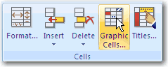
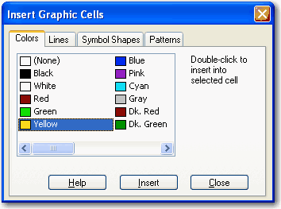
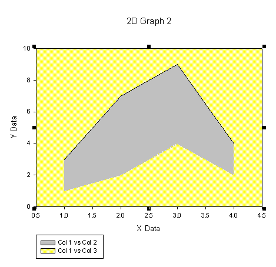

You can emphasize the difference between two curves by filling in the
area. This is useful when creating a climograph, for example, where two lines could
show high and low temperatures throughout the year. Shading between the curves aids
in visualizing the range in temperatures which would otherwise be lost in a sea of
data points.
Figure 1. An example of two plots, a bar chart and an area plot. In the area
plot, the area between the two curves is shaded.
You can shade the area between two curves by:
Using Object Properties to change
the background color of the graph to match the lower shade.
Using the Insert Graphic Cells
dialog box to insert colors in to the worksheet, and then applying those to the
plot.
To shade the area using Object Properties:
Create an area plot that uses either X
Many Y or XY Pairs
data formats. Make sure, when in the Graph Wizard, that you first select
to plot the column with the largest Y values for the upper curve. Then
use the column with the smallest Y values for the lower curve.
Figure 2. To shade between the curves, first create an area
plot that uses the larger values for the upper curve.
Once you've created the graph, select the fill. A shortcut
menu automatically appears.
Click the Paint button,
and then select the fill color that matches the color of the lower
curve.
The graph appears with the area between the two curves
shaded.
Figure 3. The area between the two curves appears shaded,
while the area under the lower curve matches the
background.For more flexibility you can define the area colors by inserting
colors into a column in the worksheet and then use the front area color
as the graph background color.
To insert graphic cells to shade between two curves:
As above, create an area plot.
View the worksheet, and select a cell in the first row of an
empty column.
On the Worksheet tab, in
the Cells group click
Graphic Cells.

In the Insert Graphic
Cells dialog box, click the
Colors tab.
Double-click to select two colors. In the first cell (row
1), select the color that you want the area to be and in the second cell
(row 2), select the color you want the background to be.

Click Close to close the
dialog box.
To assign the area plot colors to those in the worksheet:
Double-click the graph.
Select Plot > Area Fills from the Properties
list.
Under Fill Color, scroll
to the bottom of the Color drop-down
list and select the column that contains the colors you selected in the
Insert Graphic Cells dialog
box.
The graph now appears with the two shaded areas
filled with the colors you inserted in worksheet; however, the
background of the graph is still white.Figure 4. Once you've selected the color for the lower
curve, you still must match a color for the background.
Now select the background fill of the graph, and in the
shortcut menu, click the Paint button.
Select the color that matches the lower shaded area on the
graph.
The graph appears with one shaded area between the
two curves. Figure 5. As in the example above, the graph appears with
the background color matching the color of the lower shaded
region.
